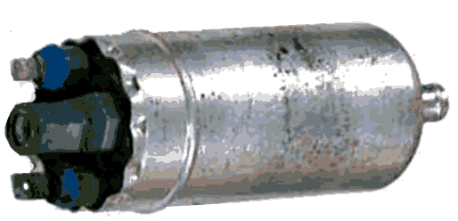

главная → ЭСУД ГАЗ
Электробензонасос EKP-3 0580464038 (BOSCH)
Назначение электромеханизма. Принцип действия
- Электробензонасос предназначен для создания давления в топливной магистрали.
- Электробензонасос представляет собой жидкостной насос коловратного типа с рабочими органами в виде роликов, приводимый в действие коллекторным электродвигателем постоянного тока.
- Предохранительный клапан насоса ограничивает давление топлива в магистрали после электробензонасоса на уровне не более 580 кПа.
- Обратный клапан насоса препятствует утечке топлива из магистрали в бак через неработающий электробензонасос, когда магистраль находится под повышенным давлением.
- Включение электробензонасоса выполняется от силового реле, которое включается и выключается по сигналам от блока управления. Силовая цепь реле защищена плавким предохранителем 10А (для автомобилей ГАЗ).
- После включении зажигания электробензонасос работает не более 5 с.
- При работающем двигателе бензонасос включен постояннно и отключается после выключения зажигания.
- Электродвигатель насоса охлаждается проходящим потоком топлива, поэтому во избежание его выхода из строя не допускается включать электробензонасос «на сухую» (когда в магистрали или в баках отсутствует топливо) на время более 2-х минут.
Конструкция электромеханизма

- Конструктивно электромеханизм состоит из следующих элементов:
- корпус с впускным и выпускным штуцерами, внутри которого размещены электродвигатель постоянного тока и роликовый насос;
- обратный и предохранительный клапаны;
- две резьбовые шпильки М5 (минус) и М4 (плюс) для подключения питающего напряжения.
Параметры электромеханизма
- Тип: проточный, роликовый
- Номинальная производительность при 13,5В: 120л/ч.
- Минимальная производительность при 6В: не менее 50л/ч.
- Напряжение электропитания: 6...18В.
- Ток потребления при 13,5 В: не более 6А.
- Пусковой ток: не более 15А.
- Производительность электробензонасоа рассчитана таким образом, чтобы при напряжении электропитания 6В обеспечивалось давление топлива в магистрали не менее нормативного при запуске двигателя и его работе на холостом ходу.
Установка и монтаж электромеханизма на автомобиле
- Электробензонасос устанавливается рядом с бензобаком и крепится за корпус хомутом, снабженным резиновыми прокладками:
- на автомобилях ГАЗ под днищем кузова;
- на автомобилях УАЗ на левом лонжероне рамы.
- Электробензонасос соединен одним резиновым шлангом с фильтром-отстойником (для автомобилей ГАЗ отсутствует), а вторым длинным топливопроводом—с фильтром тонкой очистки топлива, расположенным под капотом.
- Подключение электробензонасоса к жгуту проводов выполняется следующим образом:
- наконечник жгутового провода подключается к шпильке «+» (М4);
- отдельный провод массы, соединенный с рамой, подключается к шпильке «-» (М5).
- При демонтаже электробензонасоса следует предварительно сбросить давление в топливной магистрали и отключить минусовой провод аккумуляторной батареи.
- После замены электробензонасоса следует выполнить заполнение магистрали топливом путем принудительного включения электробензонасоса и удаления воздушной пробки из магистрали (для автомобилей УАЗ винт установлен на фильтре тонкой очистки топлива), а также проверить герметичность топливопроводов и их соединений.
Аналоги электромеханизма
Аналогом электробензонасоса EKP-3 0580464038 (BOSCH) является электробензонасос системы впрыска 18.3780 (ЗАО «ТАТЭ», г. Тюмень).
Внешние проявления неисправностей цепей электромеханизма

- Электробензонасос не работает после включения зажигания. Лампа неисправности горит при включеннии зажигания. Самодиагностика блока фиксирует коды неисправности 167...169.
- Проверьте исправность цепей реле электробензонасоса (3, 37в, 18г) и цепей электробензонасоса (57, 56).
- Двигатель не запускается. Лампа неисправности не горит (нет неисправностей системы).
- проверить наличие топлива и удалить воздушную пробку в топливной магистрали в режиме принудительного включения электробензонасоса;
- проверить исправность и, при необходимости, заменить электробензонасос.
- Двигатель работает с перебоями на высоких оборотах и не развивает полной мощности. Лампа неисправности не горит (нет неисправностей системы).
- выполнить профилактику фильтров грубой и тонкой очистки топлива;
- промыть или устранить возможные повреждения всасывающей магистрали;
- проверить производительность и герметичность электробензонасоса и, при необходимости, заменить его на исправный.
|